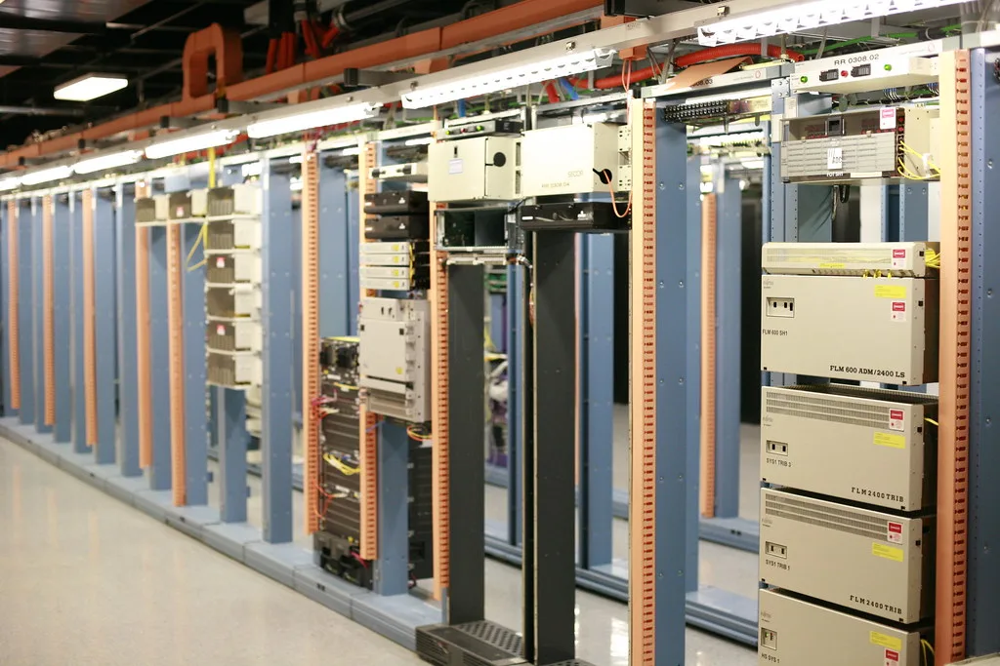

래블업, 신한DS에 AI 모델 관리 SW 첫 공급…금융권 첫 고객 확보
AI 인프라 소프트웨어 기업 래블업이 신한DS와 'GPU 관리 및 API 소프트웨어 도입 사업' 계약을 체결하고, 여러 AI 모델과 API를 통합 관리하는 솔루션 '컨티넘 스위트'를 공급한다고 23일 밝혔다. 이번 계약은 래블업이 상용 출시한 컨티넘 스위트의 첫 공급 사례이자, 금융권에서 확보한 첫 고객이라는 점에서 의미가 있다. 이번 사업에서 래블업은 API 소프트웨어 부문을 맡아 신한DS의 AI 인프라 구축을 지원한다.
컨티넘 스위트는 '컨티넘 라우터'와 '컨티넘 허브' 두 요소로 구성된다. 컨티넘 라우터는 여러 AI 모델과 서비스 사이로 들어오는 요청을 적절히 분배하는 역할을 하며, 특정 경로에 장애가 발생하면 다른 경로로 자동 전환해 서비스 중단을 최소화하는 기능을 갖추고 있다. 금융권처럼 서비스 안정성이 중요한 환경에서 AI 기능 장애가 업무 전반에 영향을 미치는 것을 막기 위한 장치로 풀이된다.

또 다른 축인 컨티넘 허브는 여러 라우터에서 발생하는 토큰 사용량과 정책, 과금 등을 한곳에서 중앙 관리하는 기능을 담당한다. 조직이나 팀, 개별 사용자 단위로 API 키를 발급하고 키별 사용량을 집계할 수 있어, 여러 부서가 동시에 다양한 AI 모델을 쓰는 대규모 조직에서 비용과 사용 현황을 투명하게 관리할 수 있다는 설명이다. 신한DS는 이 솔루션을 통해 그룹 내 여러 계열사에서 쓰이는 AI 모델과 외부 API 사용을 효율적으로 조율할 수 있을 것으로 기대하고 있다.
이번 계약의 배경에는 금융권의 생성형 AI 도입 확대 흐름이 자리하고 있다. 2024년 8월 금융당국이 망분리 규제 완화 로드맵을 발표한 이후 금융사들의 생성형 AI 활용 범위가 꾸준히 넓어졌고, 최근에는 하나의 AI 모델에만 의존하지 않고 업무 용도별로 여러 대형언어모델(LLM)과 외부 API를 함께 사용하는 사례가 늘고 있다. 이런 환경에서는 여러 모델과 API를 일괄적으로 관리하고 장애에 대응할 수 있는 관제 솔루션의 필요성이 커지는 추세다.

래블업은 GPU 가상화 기술을 기반으로 AI 인프라 비용 효율화를 지원하는 소프트웨어 기업으로, 삼성전자를 비롯한 대기업들을 고객사로 두고 있는 것으로 알려져 있다. 회사는 기술특례 상장 절차를 통해 코스닥 상장을 추진 중이며, 최근 증권신고서를 제출하는 등 상장 작업에 속도를 내고 있다. 이번 신한DS와의 계약은 래블업이 공모를 앞두고 확보한 실질적인 레퍼런스 사례로, 투자자들의 관심을 끌 만한 요소로 꼽힌다.
업계에서는 이번 공급 사례를 계기로 다른 금융사들도 멀티 AI 모델 관리 솔루션 도입을 검토할 가능성이 크다는 전망이 나온다. 금융권은 보안과 안정성에 대한 요구 수준이 높아 신규 솔루션 도입에 신중한 편이지만, 신한DS와 같은 선도 사례가 나오면 그룹 계열사나 동종업계로 도입이 확산되는 경향이 있기 때문이다. 래블업으로서도 이번 계약을 발판으로 금융권 영업을 확대할 수 있을지, 또 상장 이후 실적으로 이런 수주 성과를 얼마나 구체적으로 보여줄 수 있을지가 관전 포인트로 남아 있다.
국내 AI 인프라 소프트웨어 시장은 그동안 해외 빅테크의 플랫폼이나 클라우드 사업자의 관리형 서비스에 의존하는 비중이 높았던 만큼, 토종 기업이 금융권 핵심 인프라 영역에서 실질적인 공급 레퍼런스를 확보했다는 점도 주목할 만하다. 공공기관과 다른 대형 금융그룹들도 유사한 멀티 LLM 운영 체계를 검토하고 있는 것으로 알려져, 래블업을 비롯한 국내 AI 인프라 기업들의 추가 수주 경쟁도 한층 치열해질 전망이다.